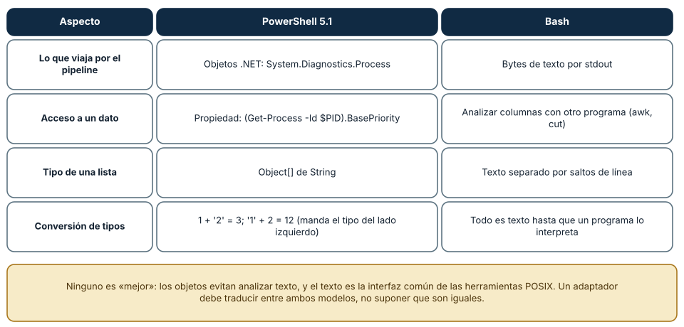
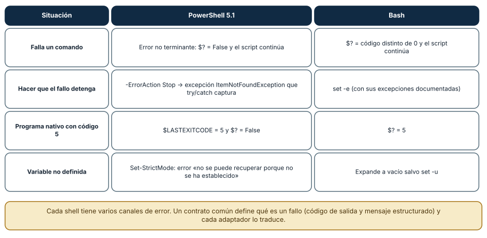
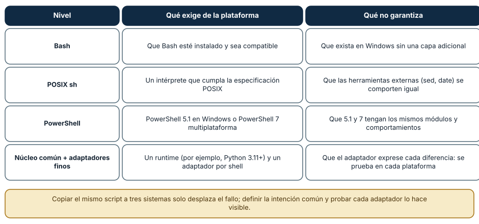

← SE-029 · ↑ Parte 02 · 📚 Índice completo · SE-031 →
Punto profesional y fundamento pedagógico
Punto profesional. La clase existe para preservar intención al portar scripts entre PowerShell y Bash.
Por qué aparece aquí. Se sitúa después de Terminales, shells y composición de comandos y antes de Variables de entorno, configuración y secretos: convierte el conocimiento anterior en una decisión observable que la clase siguiente podrá reutilizar. La continuidad se comprueba en el artefacto, no por compartir vocabulario.
Error conceptual que debe corregir. Traducir sintaxis línea por línea ignorando tipos, errores y códigos de salida.
Secuencia de aprendizaje. Antes de leer la solución, el estudiante predice el resultado del caso normal y del error conceptual anterior. Luego explica un caso resuelto paso a paso, construye un contraejemplo que cambie la decisión y, sin consultar el texto, reconstruye el mecanismo y lo aplica a una entrada nueva. La secuencia usa predicción, explicación propia, contraste y recuperación. ICAP distingue participación de construcción de conocimiento; How People Learn II exige conectar conocimiento previo, contexto y transferencia; la práctica de recuperación respalda producir de nuevo la explicación tras una demora; y Education for Life and Work exige devolución que explique la causa del error.
Evidencia de aprendizaje. Paired-scripts.md con contrato común, casos límite y tabla de divergencias. Debe contener predicción previa, observación, explicación causal, contraejemplo, criterio de aceptación y una nota de qué dato haría cambiar la conclusión.
Límite de la conclusión. Equivalencia funcional no implica equivalencia de seguridad ni rendimiento.
Trazabilidad fuente → afirmación
| Fuente primaria u oficial | Afirmación que respalda | Lo que no prueba |
|---|---|---|
| GNU Bash Reference Manual 5.3 | documenta parsing, expansión, quoting, pipelines y estado de salida en Bash | No demuestra por sí sola que el artefacto del estudiante sea correcto. |
| Microsoft Learn — About PowerShell | documenta el comportamiento de Windows o PowerShell que se compara con el contrato POSIX | No demuestra por sí sola que el artefacto del estudiante sea correcto. |
| The Open Group — Shell Command Language | define el contrato portable de procesos, rutas, entorno o shell que se contrasta entre sistemas | No demuestra por sí sola que el artefacto del estudiante sea correcto. |
Antes de empezar
El kit de diagnóstico multiplataforma necesita adaptadores para Windows, Linux y macOS. Traducir comandos palabra por palabra no funciona: PowerShell compone objetos .NET dentro de sus pipelines; Bash compone principalmente flujos de bytes y texto entre procesos. La portabilidad profesional preserva intención y contrato, no apariencia.
Resultado de aprendizaje
Al terminar podrás diseñar una automatización con núcleo conceptual compartido, adaptadores PowerShell/Bash y pruebas que detecten divergencias reales.
Prerrequisitos
SE-029, acceso a PowerShell 7 o Bash 5 para al menos una ejecución y capacidad de leer ejemplos del otro. No necesitas instalar otro shell; las afirmaciones no ejecutadas se marcan como diseño.
Problema auténtico
Un script “portable” reemplaza nombres de órdenes, pero sigue parseando columnas, usa reglas de comillas de Bash en PowerShell y consulta el estado equivocado. Arranca en ambos shells y falla ante la primera ruta con espacios.
Objetivos observables
Podrás comparar modelos de datos y error; separar contrato de adaptador; declarar una matriz de soporte; comprobar capacidades; y demostrar equivalencia semántica con casos compartidos.
Temas y por qué importan
| Tema | Mecanismo | Decisión habilitada |
|---|---|---|
| Modelo de datos | objetos frente a palabras y flujos | evitar traducciones superficiales |
| Error | excepciones, estados y flujos propios | detener o degradar con criterio |
| Adaptador | traduce contrato a capacidades locales | conservar intención sin ocultar diferencias |
| Matriz de soporte | separa objetivo de evidencia ejecutada | prometer solo lo probado |
Mapa conceptual
Ver la notación fuente del diagrama
flowchart TB
C[Contrato común del kit de diagnóstico multiplataforma] --> P[Adaptador PowerShell]
C --> B[Adaptador Bash]
P --> W[Capacidades Windows o PowerShell]
B --> U[Capacidades POSIX o Unix]
W --> N[Resultado común + detalle]
U --> N
N --> T[Pruebas compartidas]El contrato converge en significado, no en sintaxis. Los detalles de plataforma se conservan en un espacio explícito para no falsear equivalencia.
Conceptos y decisiones
Los dos shells tienen modelos de datos diferentes
En Bash, expansiones producen palabras y los pipelines conectan flujos de procesos. Convenciones como líneas, delimitadores y códigos de salida sostienen la composición. En PowerShell, los cmdlets emiten objetos con propiedades y el motor enlaza parámetros; al invocar ejecutables nativos vuelve a existir una frontera textual.
Esta diferencia explica por qué Select-Object no equivale simplemente a cortar columnas de texto y por qué parsear la presentación de un comando es frágil en ambos entornos.
Variables, ámbitos y evaluación siguen reglas propias
Bash distingue variables del shell y entorno exportado, y aplica expansiones con reglas de división y globbing. PowerShell maneja objetos, ámbitos y proveedores; sus operadores de comparación y conversión no son los de Bash.
Una guía portable define nombres y valores en un contrato externo —por ejemplo, un esquema JSON— y cada adaptador valida y transforma. No comparte fragmentos de sintaxis como si fueran lenguaje neutral.
El manejo de errores tiene canales múltiples
En Bash importan el estado de órdenes, listas condicionales, pipelines y opciones como errexit, cuyos límites deben entenderse en contexto. En PowerShell hay errores terminantes y no terminantes, $?, excepciones y $LASTEXITCODE para programas nativos. Configurar una preferencia global sin comprender la frontera puede cambiar conducta de módulos ajenos.
El kit de diagnóstico multiplataforma encapsula cada llamada externa, captura stdout/stderr, verifica estado y convierte el resultado a una estructura común. La política se prueba con fallos inducidos.
Ver la notación fuente del diagrama
flowchart TB
C[Contrato del kit de diagnóstico multiplataforma] --> P[Adaptador PowerShell]
C --> B[Adaptador Bash]
P --> W[APIs y herramientas Windows]
B --> U[APIs y herramientas POSIX]
W --> N[Resultado normalizado]
U --> N
N --> T[Mismas pruebas de contrato]El resultado normalizado no debe borrar información específica necesaria para diagnosticar. Puede incluir un bloque común y otro platform_details documentado.
La portabilidad tiene niveles
Un script puede ser portable entre versiones de un shell, entre sistemas que ofrecen ese shell o entre implementaciones distintas. PowerShell funciona en varias plataformas, pero los cmdlets y proveedores disponibles cambian. Bash puede instalarse en Windows, pero no convierte las API subyacentes en POSIX.
Antes de prometer portabilidad se declara matriz: sistemas, arquitecturas, versiones mínimas, dependencias y escenarios probados. “Multiplataforma” sin matriz es marketing, no evidencia.
Descubrimiento de capacidades y degradación explícita
Cada adaptador comprueba versiones y órdenes requeridas. Una capacidad opcional produce un informe parcial con motivo; una precondición esencial detiene la ejecución antes de modificar estado. El modo degradado debe ser visible en salida y código, no un silencio que aparenta éxito.
Seguridad de argumentos y archivos temporales
Los dos shells pueden sufrir inyección si datos se convierten en código. No se evalúan cadenas provenientes de rutas o configuración. Los temporales se crean con mecanismos seguros, permisos restringidos y limpieza controlada; nombres predecibles en directorios compartidos abren carreras y sustitución.
Las referencias normativas son el manual de Bash y la documentación about de PowerShell. Los ejemplos deben fijar la versión probada porque ambos evolucionan.
Objetos frente a texto: dos modelos de datos
PowerShell y Bash no solo tienen sintaxis distinta: *transportan cosas distintas* por un pipeline. En PowerShell 5.1, Get-Process devuelve objetos .NET (System.Diagnostics.Process), cuyas propiedades (BasePriority, Id) se consultan por nombre; una lista de cadenas es un Object[] de String. En Bash, un comando escribe bytes por stdout y el siguiente los analiza con otro programa (awk, cut). Los objetos evitan analizar texto frágil; el texto es la interfaz común y estable de las herramientas POSIX. Las conversiones también difieren: en PowerShell, 1 + '2' es 3 (se convierte el operando derecho al tipo del izquierdo) y '1' + 2 es 12; en Bash todo es texto hasta que un programa lo interpreta.

Cómo leer la figura. Cada fila contrasta un aspecto. Las dos últimas son las que más sorprenden a quien cambia de shell: el tipo de una lista y la conversión implícita. Dónde deja de valer: los resultados provienen de PowerShell 5.1 (el de Windows); PowerShell 7 es multiplataforma y tiene diferencias de comportamiento y de módulos. Y en cualquiera de los dos se puede serializar a un formato estructurado (JSON) para intercambiar datos sin depender del modelo del shell.
Errores en dos shells
Cada shell tiene varios canales de error. En PowerShell 5.1, un comando que falla con un *error no terminante* deja $? en falso y el script *continúa*; con -ErrorAction Stop el error se convierte en una excepción (ItemNotFoundException, en la prueba) que try/catch captura. Un programa nativo deja su código en $LASTEXITCODE (5, en la prueba), y $? es falso. Con Set-StrictMode -Version Latest, usar una variable no definida es un error («no se puede recuperar porque no se ha establecido»). En Bash, $? guarda el código del último comando, set -e detiene el script y set -u convierte una variable no definida en error. La consecuencia es que no basta traducir comandos: hay que traducir *qué significa fallar*.

Cómo leer la figura. Las filas son situaciones y las columnas, los mecanismos que cada shell usa. Dónde deja de valer: el comportamiento de $ErrorActionPreference y de los errores de programas nativos cambió entre versiones de PowerShell, de modo que un script debe fijar su configuración y probarse en las versiones que declara soportar. set -e en Bash tiene excepciones y no es una garantía universal.
Niveles de portabilidad
«Portable» no es un valor binario. Un script de Bash exige Bash; uno POSIX sh exige un intérprete compatible, pero las herramientas externas (sed, date) varían entre sistemas; uno de PowerShell exige 5.1 o 7; y un núcleo en un lenguaje con adaptadores finos exige un runtime declarado. El diseño del laboratorio de la Parte 02 elige el último nivel: un núcleo en Python con un adaptador de Bash y otro de PowerShell que solo traducen argumentos y códigos de salida. Probar el mismo contrato en Windows y en Linux (el laboratorio pasó sus diez pruebas en ambos, en Python 3.12.9 y 3.12.3) es lo que lo hace portable, no la sintaxis.

Cómo leer la figura. Cada nivel amplía el alcance a costa de una dependencia: la última fila no elimina las diferencias, las aísla en adaptadores finos que se prueban en cada plataforma. Dónde deja de valer: un núcleo en un lenguaje añade el costo de arranque de su runtime (la medición de SE-028: unos 140 ms en Windows) y la obligación de distribuirlo; para scripts triviales, un script de shell puede seguir siendo la herramienta correcta.
Definiciones de trabajo
- núcleo: lógica que opera sobre el contrato común sin conocer comandos concretos;
- adaptador: traducción entre una capacidad local y el modelo común;
- equivalencia semántica: mismo resultado observable dentro de límites declarados;
- matriz de soporte: plataformas, versiones y escenarios realmente probados;
- degradación: resultado parcial explícito cuando una capacidad opcional falta.
Caso conductor: dos adaptadores, un contrato
El kit de diagnóstico multiplataforma define una operación inspect_path con entrada path y salida común: ruta resuelta, existencia, tipo y estado de acceso. La implementación PowerShell usa APIs/cmdlets nativos; la implementación Bash usa herramientas disponibles y evita parsear columnas decorativas.
Las pruebas entregan rutas con espacios, ausencia, directorio y acceso limitado. Comparan campos semánticos, no el orden visual. Si una plataforma aporta ACL detallada y otra no, el campo de capacidad explica la diferencia.
Práctica guiada
- Escribe el contrato de una operación sin sintaxis de shell.
- Implementa un adaptador PowerShell y uno Bash.
- Añade comprobación de dependencias y versión.
- Ejecuta los mismos casos de contrato en ambos.
- Registra divergencias legítimas y fallos de implementación.
- Añade modo
--dry-runa cualquier operación que pudiera modificar estado.
Una traducción superficial que solo cambia nombres de comandos no satisface la práctica.
Ejemplo mínimo
Bash entrega líneas de texto desde una herramienta; PowerShell entrega objetos desde un cmdlet. Ambos adaptadores producen {exists, type} y mantienen la salida original solo como detalle diagnóstico. Las pruebas comparan campos, no presentación.
Ejemplo profesional
Una herramienta corporativa necesita inventariar versión en tres sistemas. Cada adaptador consulta una fuente estable, normaliza una versión y reporta unavailable cuando la política bloquea acceso. El tablero no confunde desconocido con versión cero.
Ejercicios
- Reescribe una intención de archivo sin mencionar ninguna orden de shell.
- Compara
$LASTEXITCODE,$?y el estado de una orden en Bash con ejemplos delimitados. - Diseña una matriz con diseñado, ejecutado, aprobado y no soportado.
Reto verificable
Ejecuta el mismo fixture con un adaptador real y uno simulado del otro shell. Deben satisfacer el mismo esquema y producir una divergencia documentada, no un campo inventado.
Preguntas frecuentes
¿PowerShell multiplataforma elimina la necesidad de adaptadores?
No. El lenguaje puede estar disponible, pero proveedores, cmdlets y sistema subyacente cambian.
¿POSIX shell y Bash son lo mismo?
No. Bash implementa y extiende un lenguaje; usar sus extensiones reduce el alcance portable.
¿PowerShell 7 reemplaza a Windows PowerShell 5.1?
Es una edición distinta, multiplataforma y de código abierto, que convive con 5.1. No son idénticas: hay módulos y comportamientos que solo existen en una. Un script debe declarar la versión mínima y detectar capacidades en vez de suponer cuál está instalada.
¿Un .ps1 se ejecuta con doble clic?
Depende de la política de ejecución y de la asociación de archivos del equipo; por defecto, Windows suele abrirlo en un editor, no ejecutarlo, y la política puede impedir los scripts sin firma. Cambiarla es una modificación del sistema que no se hace como parte de un diagnóstico: se invoca el script con un comando explícito, o se pide la autorización adecuada.
¿Cómo manejo archivos temporales de forma segura en cada shell?
Con funciones que crean nombres únicos y con permisos restringidos (mktemp en POSIX, las funciones de .NET en PowerShell), en un directorio controlado, y limpiándolos con trap/finally. Nunca con un nombre predecible en una carpeta compartida: es una vía clásica de ataque.
Fallo controlado y diagnóstico
Entrega una ruta con espacios y un comodín literal al adaptador. Si se divide o expande, identifica la fase de interpretación y corrige el paso de argumentos sin usar evaluación dinámica.
Una segunda práctica compara el tratamiento de errores. Escribe, en cada shell disponible, un script de tres pasos en el que el segundo falle (por ejemplo, abrir un archivo inexistente) y el tercero imprima «terminé». Síntoma esperado: sin configuración especial, ambos *continúan* e imprimen «terminé» con un código final de éxito. Causa: error no terminante en PowerShell y falta de set -e en Bash. Corrección: en PowerShell, $ErrorActionPreference = 'Stop' y try/catch; en Bash, set -euo pipefail (conociendo sus límites) o comprobaciones explícitas. Registra en una tabla qué mecanismo equivale a cuál y qué casos no se traducen de forma exacta.
Errores comunes y cómo corregirlos
| Síntoma | Causa conceptual | Corrección |
|---|---|---|
| Se parsean columnas coloreadas | Se confundió presentación humana con interfaz | Usar salida estructurada o API estable |
| PowerShell y Bash “pasan” casos distintos | No existe contrato compartido | Definir fixtures y aserciones semánticas comunes |
$? se consulta tarde | Otro comando reemplazó el estado | Capturarlo inmediatamente y encapsular la invocación |
| El script evalúa una ruta | Datos se transformaron en código | Pasar argumentos sin reevaluación |
| “Compatible” significa que el shell inicia | No se verificaron capacidades subyacentes | Publicar y probar una matriz de soporte |
Entorno y archivos clave
Compara diagnostic-kit.ps1 y diagnostic-kit.sh: ambos delegan el contrato, pero cada uno resuelve runtime, argumentos y fallo según su shell, sin pretender identidad sintáctica.
work/SE-030/contract.json, diagnostic_kit.ps1, diagnostic_kit.sh, fixtures/ y support-matrix.md. No instala shells ni herramientas globales.
Seguridad, ética y accesibilidad
No evalúes entradas, crea temporales seguros y redáctalos al fallar. Los dos adaptadores deben ofrecer mensajes equivalentes y códigos consumibles sin depender del formato visual.
Puente hacia el trabajo con agentes
Pedir a un asistente que «lo haga en un script» sin indicar el shell produce código en el dialecto que le resulte más probable, y las diferencias de esta clase convierten esa ambigüedad en errores: un && que PowerShell 5.1 no entiende, una expansión que Bash hace y PowerShell no, un manejo de errores que continúa en silencio. El contrato correcto para un agente es el del laboratorio: un *núcleo* con interfaz estable (argumentos, códigos de salida, esquema de salida) y adaptadores finos que se prueban en cada plataforma declarada. Además, al pedirle un script se debe especificar la versión mínima, el manejo de errores esperado y las pruebas; y la revisión humana comprueba que el script se ejecuta (o que se declaró no haberlo hecho) en cada shell soportado. Las partes de harness y de especificación desarrollan esas plantillas.
Transferencia
Aplica el patrón a dos SDK de nube o dos motores de base de datos. Decide qué pertenece al contrato y qué debe permanecer como detalle del proveedor.
Evaluación y evidencia
Se exige contrato previo, dos adaptadores, fixtures compartidos, matriz honesta y fallo controlado. Código parecido no demuestra comportamiento equivalente.
Criterio de cierre
Puedes explicar las diferencias de datos y error, implementar adaptadores que preservan un contrato y presentar evidencia de la matriz realmente probada.
Límites y siguiente paso
No buscamos cubrir toda la sintaxis ni producir scripts idénticos. Aún falta decidir cómo ambos adaptadores reciben configuración sin convertir el entorno o los logs en un almacén de secretos; ese es el foco siguiente.
Fuentes
- GNU Bash Reference Manual 5.3 — documenta parsing, expansión, quoting, pipelines y estado de salida en Bash.
- Microsoft Learn — About PowerShell — documenta el comportamiento de Windows o PowerShell que se compara con el contrato POSIX.
- Microsoft Learn — about_Automatic_Variables — documenta el comportamiento de Windows o PowerShell que se compara con el contrato POSIX.
- The Open Group — Shell Command Language — define el contrato portable de procesos, rutas, entorno o shell que se contrasta entre sistemas.
- about_Try_Catch_Finally y manejo de excepciones en PowerShell: errores terminantes y no terminantes,
-ErrorActiony$ErrorActionPreference; respalda la figura 2. - Laboratorio de la Parte 02: núcleo en Python con adaptadores de Bash y PowerShell; sus diez pruebas se ejecutaron en Windows y en Linux (WSL2).
Glosario
- Adaptador: implementación específica que traduce un contrato común a una plataforma.
- Contrato: definición observable de entradas, salidas, errores y efectos.
- Modo degradado: ejecución limitada que declara capacidades ausentes.
- Portabilidad: grado de funcionamiento demostrado dentro de una matriz definida.
- Proveedor de PowerShell: interfaz que presenta almacenes como espacios navegables.